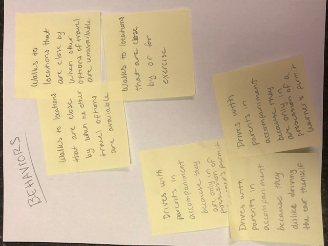
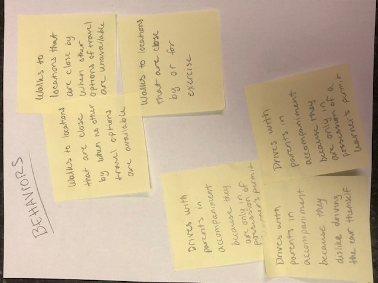

My Process
Conducting User Research
The first step of my process is to gather information from the user demographic. My preferred method to gather information is through user interviews. Gathering information from the users of the planned/preexisting product is useful for understanding what features should be included, and where improvements can be made.
Defining the Problem, Goals, and Solution
After information has been gathered from the users, I like to use affinity diagramming to establish patterns of behaviors, motivations, and greivances. Placing physical notes of the users' answers and opinions helps my thought process and view common held opinions between the interviewed users. Once I have established the commonality of opinions, I define: a shared problem, goals for the product to acheive, and how it will achieve those goals in the solution.
 

Understanding the User
Understanding the user is a key part in the process, their: when, why, and how they use the product. All users require the product to fulfill their needs at certain times, and insuring that how they interact with the product is intuitive and efficient make the user experience all the more enjoyable. Creating a user persona is a useful way to establish a broad and generic background, and opinion for users based on the gathered information.
Mapping Out the User Experience
Using the user persona and the defined goals and solution, I begin to map out the user journey through the planned solution. While mapping out the user's experence, I take into account their feelings, sights, thoughts, and intentions through each step of the process. This step is helpful for figuring out an initial idea and design for the product.

Sketching
After conceptualization is design, and simple sketches are the first part of the design process. Using the user journey map, I convert each phase in the map to a sketch on paper. The benefit of starting with sketches is that, since it only requires a paper and pencil, multiple sketches can be created in a short amount of time. This step is both fast, and efficient to start designing.
Wireframing
Once I have a solid sketch, I create a wireframe to act as a layout. The sketch starts out very complex in design and visible features, so a wireframe helps to simplify the aesthetic while allowing any necessary revisions to be made to the layout.
Prototyping
Once the design for the wireframe has been finalized, I improve it's visual aesthetic by adding imagery, colors, font styles, etc. Prototypes are great for establishing color schemes and other branding traits to a product to make it memorable.

User Testing
User testing is the most vital and repetitive part of the design process. I like to perform this step as often as possible, and as many times as possible. From sketching to prototyping, I like to get user input on my design to make every aspect of the product as tailor-made to the users for them to enjoy. Getting the user's input is critical to insuring that a product is actually usable for the intended demographic.